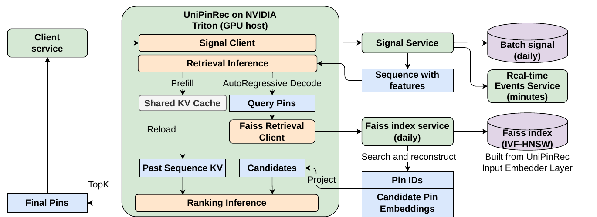

Pinterest's recommendation pipeline, like most companies', is split into retrieval and ranking: the retrieval model PinRec uses ANN to pull fewer than 3,000 candidates from the full Pin corpus, and a ranking model then scores those candidates. Both sides are now Transformers and both take the same user engagement history as input, yet they are trained and deployed separately, so every online request encodes that history twice. UniPinRec merges the two into one model: the user history is encoded once, retrieval uses the output vectors to query the ANN index, and ranking directly reuses the KV cache left by that encoding to score candidates. Offline, its retrieval Recall@10 matches the production retrieval model, and its Hit@3 when ranking by predicted "save" is 14.7% higher than the production ranker. After replacing the original retrieval on Board More Ideas (Pins recommended for one of the user's boards) and on notifications, surface saves rose 0.95% on the former and push opens rose 0.91% on the latter.
1. Why merge retrieval and ranking, and why it hasn't been done
When retrieval and ranking are trained separately, each learns user representations from the same engagement history, parameters are not shared, training compute is paid twice, and serving GPUs are paid twice. Once both backbones became Transformers, encoding the history became the most expensive computation on both sides, which makes the duplication more obvious.
Merging them runs into three problems. The first is usage: retrieval must pick from millions of candidates within milliseconds and can only use ANN dot products, while ranking looks at a few hundred candidates and can afford heavier per-candidate cross computation. The second is objectives: retrieval uses a sampled softmax over the full corpus, ranking uses binary cross-entropy over the impression set. The third is serving constraints: the merged model must be cheaper than separate deployment, must still work alongside other candidate sources such as keywords and trending, and each stage must still be A/B tested and rolled back on its own.
Existing work merges only part of this. HSTU uses the same kind of Transformer, but its retrieval input is a pure item sequence while its ranking input inserts an action token after every item; the two formats differ, so the stages are trained separately and cannot share computation. End-to-end methods such as OneRec autoregressively generate semantic IDs and replace the whole funnel, which makes it hard to plug in the other existing candidate sources and loses the ability to roll back stage by stage.
![A comparison along four dimensions: input format, architecture, training and serving; blue means unified, grey means separate. HSTU unifies only the backbone, with two input formats and two copies of training and serving; OneRec unifies format and model with semantic IDs, but trains with a multi-stage pipeline and must replace the whole funnel at serving; UniPinRec is blue on all four: one input format, one prefill plus two decodes, single-stage joint training, and a drop-in replacement for the original retrieval service.](../../figs/2026-10-24/personalization/recsys26-unipinrec/fig1_comparison.png)
2. Method
![End-to-end flow. The top half is the training data: the past engagement sequence (Pins, search queries, boards and their actions) and the full impression slate of a later request, which includes negatives with no engagement. The bottom half is a GPT-2-style backbone where 20% of historical actions are randomly masked and attention between candidate positions is switched off. Two heads sit on the output: the Pin decoder does retrieval with sampled softmax, and the action decoder does ranking with BCE. In the attention mask at the top right, the last few candidate positions see only the history, not each other.](../../figs/2026-10-24/personalization/recsys26-unipinrec/fig2_overview.png)
2.1 Starting point: PinRec
PinRec is Pinterest's production generative retrieval model. Each Pin is represented by a pretrained OmniSage vector and a CLIP multimodal vector, projected by an MLP into an L2-normalized vector; the Pins a user positively engaged with are ordered by time and fed into a causal decoder-only Transformer, each position predicts the next Pin, and the loss is a sampled softmax with logQ frequency correction, with negatives drawn from the batch and from random sampling. UniPinRec adds ranking to this model and has to solve two things: how action information enters the sequence, and how candidates are attached to the sequence.
2.2 Concatenate actions on the feature dimension, then mask them at random
HSTU inserts an action token after every item, which doubles the sequence length and breaks format compatibility with retrieval. UniPinRec instead uses Masked Action Modeling (MAM): the multi-hot action vector at each position (click, save, hide, etc.) goes through a linear layer, is concatenated with that position's item vector along the feature dimension, and the two are projected together to the hidden size. Because actions sit on the feature dimension rather than the sequence dimension, the sequence length is exactly the same as the retrieval model's, so a retrieval checkpoint can be used directly for initialization.
During training, each action in the history is independently masked with probability and replaced by a dedicated [MASK] class; candidate positions always have their actions masked, because at serving time the user has not yet seen the candidates. [MASK] takes its own dimension, so the model can tell "action unknown" apart from "user took no action". Masked positions must predict their own actions, and that is where the ranking supervision comes from.
An illustrative example: the user history is A (saved), B (clicked), C (no action). During training B's action is masked; at B's position the model sees only B's content vector plus A's content and "saved", and must output the probabilities that B was clicked, saved or hidden.
2.3 Candidates appended after the history, invisible to each other
The candidates returned by ANN are appended after the history items to form one sequence. The history part uses ordinary causal attention; each candidate sees the whole history but not the other candidates, which is the M-FALCON masking scheme. All candidates share the same position ID, surface type and timestamp, so a candidate's score does not depend on which other candidates are in the same batch. Attention cost drops from to , and flex attention compiles this block-sparse mask into fused kernels.
The total loss is the retrieval loss plus the ranking loss:
is the next-Pin prediction loss over history positions, the same as PinRec; is an action type and the number of action types; is that action's MLP head; and are the hidden states at history position and candidate position ; is the 0/1 label for whether the action happened; is the set of masked history positions; is each action's weight. The first term makes history positions predict their masked actions, the second makes candidate positions predict the actions that actually followed the impression.
2.4 Training examples: past engagements plus the full impression slate of the next request
Retrieval models are usually trained only on positive engagement sequences, while ranking models use impression logs that contain both engaged and unengaged items. Joint training needs both, so each example consists of a past engagement sequence plus the full impression slate (the paper calls it a feedview) of a later request with its engagement labels. Each sequence position is a (Pin, surface, action, timestamp) tuple. Slates with no engagement at all are kept at 10% to amplify the rare engagement classes; the evaluation set is not downsampled.
Engagement sequences and impression records are stored as two Iceberg tables bucketed by user ID, and Ray's data-loading layer joins them in memory by bucket at training time. This avoids materializing a duplicated large table offline, and parameters such as sequence length and sampling ratio can be changed at training time.
2.5 Serving: two processes, one shared block of GPU memory

Retrieval and ranking run as two Triton nodes in two separate processes, with the CPU-hosted Faiss index between them. Faiss's search_and_reconstruct returns the Pin vectors stored in the index together with the candidate IDs, and the ranking node uses those vectors directly as candidate tokens, which saves one embedding computation and guarantees that retrieval and ranking use the same item representation.
Passing the KV cache across processes is the key part. Serializing KV tensors and sending them from one process to another requires a GPU→CPU→GPU round trip, and that trip dominates latency. UniPinRec has each retrieval replica pre-allocate, at startup, a GPU memory pool of shape [layers, slots, KV heads, history length, head dim] and export it via CUDA IPC handles; the ranking process maps the same physical GPU memory into its own address space and reads the history KV written by retrieval directly. Slots are reused round-robin.
3. Experiments
3.1 Can one model do both retrieval and ranking
This experiment is meant to show that joint training neither hurts retrieval nor produces ranking worse than a dedicated ranker. The data is from the Board More Ideas surface. Retrieval is measured by Recall@10 (how many of the Pins the user engaged with in the future slate are in the top 10 retrieved), ranking by Hit@3 (after ranking by the save head's score, whether the top 3 contain a save). The comparisons are: the production ranker TransAct V2 + DCNv2 (a long-sequence Transformer plus a feature-crossing module); HSTU, trained for both retrieval and ranking with the interleaved input format at matched effective sequence length; PinRec; a PinRec fine-tuned variant that trains retrieval first and then adds the ranking loss with the item encoder frozen, the freeze being needed to stay compatible with the already built Faiss index; and a UniPinRec trained only for ranking, with the retrieval loss removed. The two metric columns are computed on different evaluation sets.
| Method | Hit@3 | Recall@10 |
|---|---|---|
| TransActV2 + DCNv2 | 0.088008 | N/A |
| HSTU | 0.097326 | 0.76161 |
| PinRec | N/A | 0.77486 |
| PinRec finetuned | 0.095869 | N/A |
| UniPinRec w/o item loss | 0.097345 | N/A |
| UniPinRec | 0.10096 | 0.77659 |
On retrieval, UniPinRec is essentially on par with PinRec (+0.2%), so it can directly replace production retrieval. On ranking, it is 14.7% higher than the production ranker and also above HSTU. Removing the retrieval loss drops Hit@3 to 0.097345: the next-Pin prediction for retrieval gives ranking extra supervision, so joint training beats ranking-only training. The fine-tuned PinRec is worse because its item encoder is frozen and the item vectors cannot adapt for ranking.
3.2 How much does reusing the KV cache save
This experiment is meant to show the speed gain from sharing the history encoding. It runs on an NVIDIA L40S with batch 8, 992 history tokens, 656 candidates and 12 layers, comparing "re-encode the history at ranking time" (prefill) with "reuse the KV and compute only the candidates" (decode).
| Path | Dtype | Attention | Runtime | Latency (ms) | Speedup |
|---|---|---|---|---|---|
| Prefill | bf16 | SDPA | compile | 25.72 | 1.00× |
| Decode | bf16 | SDPA | compile | 10.42 | 2.47× |
| Decode | bf16 | flex | compile (used online) | 8.57 | 3.00× |
| Decode | fp8 | flex | CUDA graph | 6.56 | 3.92× |
Online, at the same GPU budget and with bf16 + SDPA for both retrieval and ranking as the baseline, the bf16 + flex decode setup cuts end-to-end latency by 11.1% and lifts QPS by 63.6%. The fp8 setup lifts QPS by 109.1% but raises latency by 6.7%: the fp8 kernels require the flattened leading dimension to be a multiple of 8, and each autoregressive retrieval step has only 1 token, so requests must wait until a batch fills up. The online experiments therefore use bf16.
3.3 Masking ratio
With at 0, 0.1, 0.2 and 0.3, Hit@3 is 0.09923, 0.10078, 0.10096 and 0.10075. No masking is the worst and 0.2 is the best. The authors also ran scaling experiments, with depth from 2 to 24 layers and sequence length from 256 to 2048, and quality kept improving along both; attention cost grows quadratically with sequence length, so sequence length becomes the bottleneck first in latency-sensitive settings.
3.4 Online A/B
Online, the original retrieval was replaced by UniPinRec's "retrieval + light ranking" service: ANN first over-fetches candidates (about 2x on Board More Ideas, about 3x on notifications), the action heads rank them, and the top K (K below 3,000) are passed downstream. The downstream TransAct V2 ranker is left unchanged, so the offline ranking gain is diluted downstream. The control is PinRec.
| Surface | Metric | Lift |
|---|---|---|
| Board More Ideas | Surface saves | +0.95% |
| Board More Ideas | Site-wide saves | +0.08% |
| Notifications | Push opens | +0.91% |
| Notifications | Push opens (dormant users) | +1.72% |
| Notifications | Notification-surface saves | +3.84% |
| Notifications | Email clicks | +0.30% |
| Notifications | Weekly active users | +0.09% |
The push-open lift for dormant users is about twice that for all users; the authors' explanation is that more personalized notification content works better for bringing back lapsed users.
4. Limitations
The authors state that UniPinRec currently merges only retrieval with upstream light ranking and has not replaced the L2 ranker, because the L2 ranker also depends on a whole set of infrastructure for score calibration, training logging and operational tooling. The fp8 setup has higher throughput but adds latency because of the batch-shape constraint, and has not been launched.
In addition, the two columns of Table 1 are computed on different evaluation sets, and Hit@3 is reported only for the "save" head; the paper does not give ranking quality for other actions such as click or hide.
5. Practical implications
- If your retrieval and ranking are both Transformers that read the same engagement sequence, the most direct gain comes from sharing the history encoding. At ranking time the history only reads the KV cache and only the candidates are computed, so a single ranking forward pass drops from the order of to $O(nk)$, and this step does not require changing how you train first.
- The MAM trick can be used on its own: concatenating actions on the feature dimension instead of inserting new tokens keeps the sequence length unchanged and adds action-prediction supervision to a retrieval backbone.
- Pinterest's rollout order is worth copying: replace retrieval plus light ranking first and leave the downstream ranker untouched, so A/B attribution is clean and this segment can be rolled back on its own if something goes wrong.